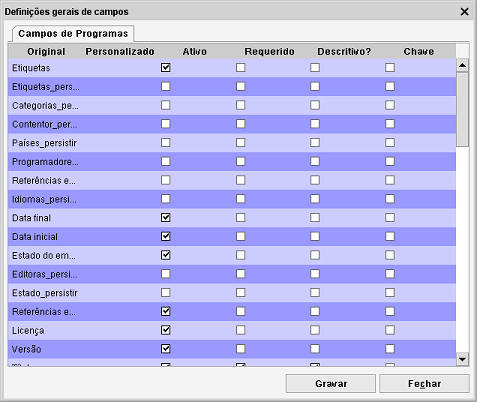

Definições gerais de campos
Caminho de menu: Definições > Definições gerais de campos
Usando as definições gerais de campos, as propriedades de cada um dos campos podem ser alteradas.

Renomear um campo
O rótulo de cada campo pode ser renomeado. O nome original é mostrado à esquerda. Este
é o valor predefinido. Pode introduzir um novo valo na coluna Personalizado. Clique em Gravar
para aplicar as alterações.
Marcar um campo como requerido
Pode marcar um campo como requerido. Ao gravar, este campo tem obrigatoriamente que estar preenchido.
O item só é gravado quando todos os campos requeridos estiverem preenchidos.
Ativo
Definir um campo como inativo, não só o oculta mas também impede o Data Crow de usar o campo.
Note que há um campo para o qual esta opção é completamente ignorada, nomeadamente, o campo ID.
Descritivo?
Quando um campo (ou uma combinação de vários campos) está marcado como descritivo, o valor neste
campo é usado para representar os itens.
Chave
A combinação dos campos chave será usada para verificar se os itens já existem.
Leia (mais acerca disto).
Adicionar os seus próprios campos
Há cinco campos predefinidos como inativos. São dois campos de texto curto, um campo de texto longo (mais de
4000 carateres) e dois campos numéricos. Pode ativá-los marcando a respetiva caixa. Pode renomeá-los
à sua vontade (veja o parágrafo anterior). Não se esqueça de os tornar visíveis!